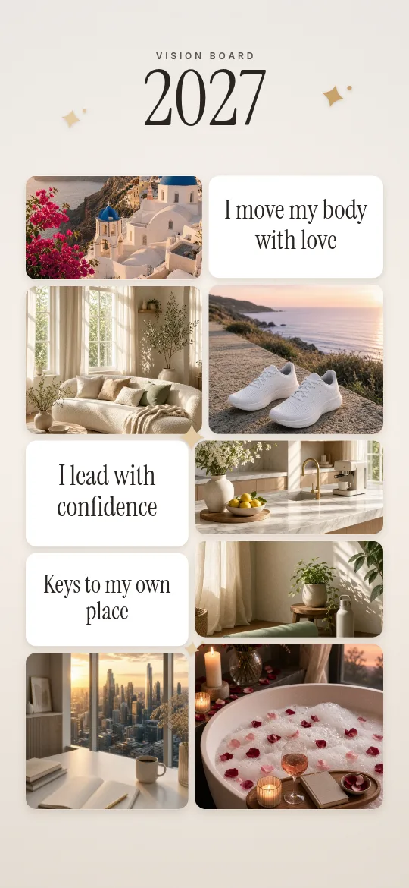
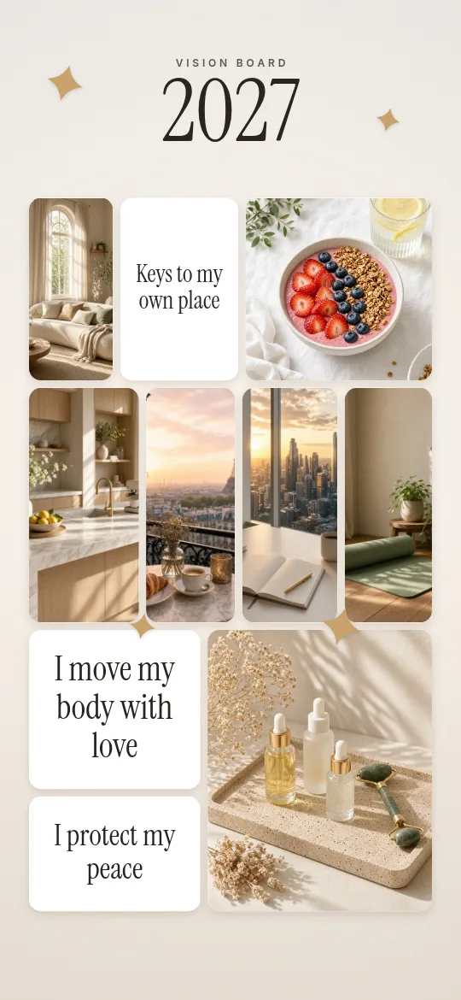

2027 AESTHETIC · CLEAN GIRL
Clean girl vision board wallpaper for 2027
Neutral tones, glowing skin, pilates and matcha: the clean girl aesthetic is about a calm routine. It works best for health, self-care and “that girl” habit goals.



The Clean Girl look in one line
Warm white, oat, latte beige and soft gold accents. Rounded photo corners and an elegant serif title.
What to put on it
- A yoga mat or pilates studio for movement goals
- A green smoothie for nourishment
- A skincare shelf for self-care
- A sunny, plant-filled living room for home
- A tidy laptop desk for career
In Glowboard you just tap the goals you want (travel, money, love, style and more) and the matching photos and affirmations are added for you. You can also add your own photos. They stay on your phone.
Tips for a board you will actually look at
- Let the neutral background do the work. Avoid more than one accent color.
- Habit goals are a great fit here: “8 hours of sleep”, “pilates 3x a week”.
- Shuffle the layout a few times until the brightest photo sits at the top.
- “Strong body, calm mind”
- “Rest is productive”
- “That girl, every day”
- “Glowing from the inside”
- “I protect my peace”
How to set it as your lock screen
iPhone: tap Save image (or long-press and choose “Save to Photos”). Open Photos, tap Share, then Use as Wallpaper. Android: open the image in Gallery or Google Photos, tap ⋮, then Set as wallpaper, then Lock screen.
FAQ
Is Clean Girl free?
Yes. Clean Girl is the default free look.
Will the clock cover my photos?
No. Clock-safe mode keeps the top part of the wallpaper clear for the iPhone clock and widgets.
More 2027 looks


Glowboard is a free vision board wallpaper maker. There is no sign-up, and your photos never leave your device.